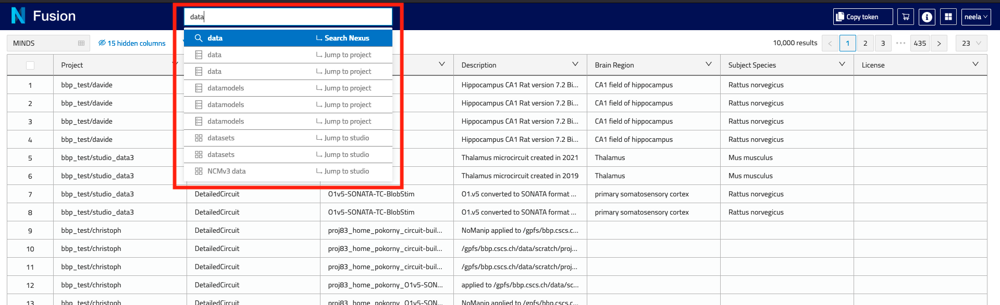
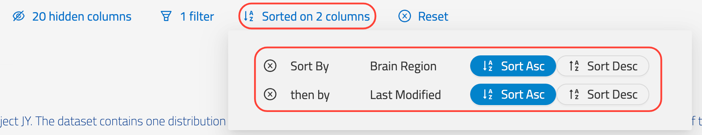
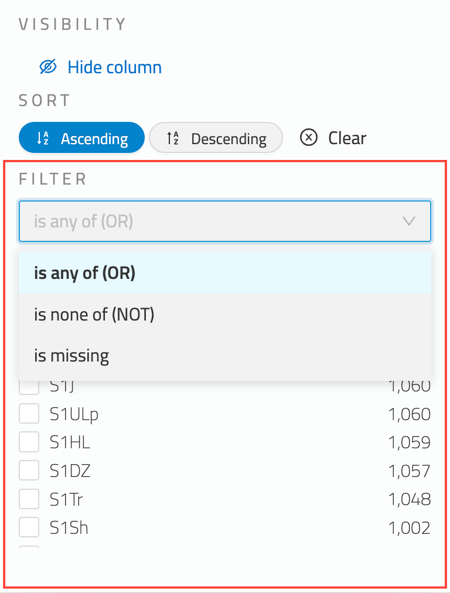
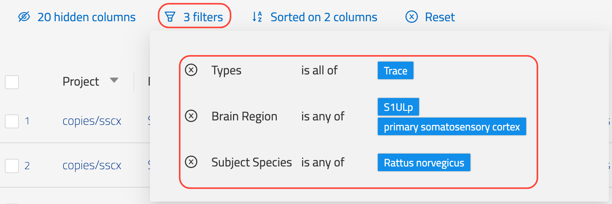
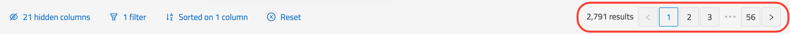
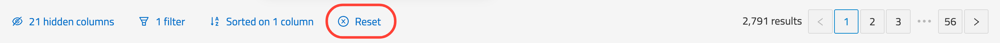

Search
Search provides functionality to search across all data in Nexus. Search is accessible via the Search menu option and the Search bar.
Search requires Delta configuration. See the Delta Search documentation for details: Delta Search Documentation
Search Bar
The search bar at the top of screen provides both instant access to full-text search as well as convenient navigation of Nexus. To activate, either click the search box or press the / key and begin typing.

Full-text Search
Full-text search is the default option within the search bar and is listed first. Hitting enter on the keyboard will display the Search page showing the results for the given search criteria. On the search page additional filter criteria and customisations can be applied to the search results (sort, filter, etc) as described in subsequent sections.
Jump to Project
Projects matching the search criteria are listed below the search text from which you can instantly jump to the given project.
Sorting
Where no explicit sort criteria has been applied, search results are ordered by their ElasticSearch relevance score. Sort criteria can be applied to one or more fields to customise the ordering of results in the table.
In order to sort on a specific field, open the field’s dropdown menu and select one of Sort Ascending or Sort Descending (highlighted below).

Upon selecting a sort direction the sorting criteria will be applied and the results updated immediately. Click the Clear button to remove the sorting criteria for the field. Sort criteria can be applied to several fields.
If a field doesn’t support sorting then the sorting option will not be displayed.
A summary of the status of sorted columns is displayed at the top of the search results table (highlighted below).
The Sort dialog shows all sort criteria currently applied to the search results (shown below).

The sort direction can be changed here as well as removed entirely.
Filtering
Filters allow you to filter the search results further. The field’s dropdown menu provides access to the filter options. In the example below, the filter options for the Brain Region field are highlighted.

The Operator dropdown determines the type of filter operation and can be one of:
- is all of (AND) - resource must have all selected filter criteria
- is any of (OR) - resource must have one of the selected filter criteria
- is none of (NOT) - resource must not have any of the selected filter criteria
- is missing - resource must not have a value for the property
The list of filter values is displayed below the operator dropdown ordered by the terms that appear most frequently. The search box provides the ability to search for a specific filter term.
A summary showing the number of filters applied is displayed above the search results table. Clicking on it reveals the filter dialog (see below).

The filter dialog lists all currently applied filters and provides the ability to remove a filter.
Hidden Columns and Ordering
The search results table can be customised to display only the columns that you are interested in. The summary displaying the number of hidden columns is displayed at the top-left of the search results table (highlighted below).

Click on the hidden columns summary to open the hidden columns and column order configuration dialog which is shown below.

Each available column to display in the search results is listed along with a toggle to show or hide the column. The (Show all Columns) option provides a convenient way to show all columns.
Column ordering
Columns can be reordered by clicking on the three vertical dots next to the column name and dragging to the desired location.
Hiding column using the Field menu
An individual column can also be hidden using the field menu’s Hide column option (highlighted below).

Pagination
The search results table is paginated to allow for convenient browsing of the search results. The paging controls for navigating the pages of results along with page size options are displayed at the top-right of the search results table (highlighted below).

By default, the page size is set to match the number of rows that fit your screen. You can however use the pagination dropdown in order to select a different page size. If a page size with more results than fit the page is selected, a scrollbar will display enabling vertical scrolling of the results.
Reset Search Customisations
All customisations to the search results can be removed using the Reset option displayed above the search results table (highlighted in the screenshot below).
